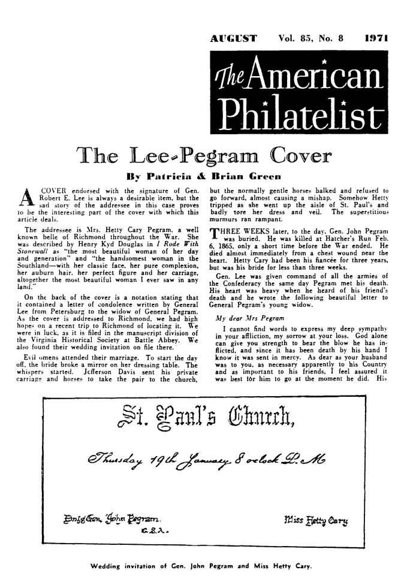
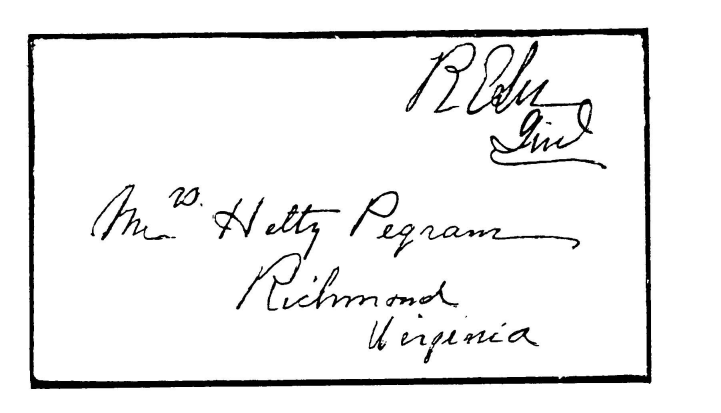

|
|
|||||||||
|
|
11 GENERAL JAMES WEST PEGRAM6 AND ISSUE Mary Evans7, Gen. John, Maj. James West Jr., Col. William Johnson and Virginia Johnson. GENERAL JAMES WEST PEGRAM6 (John5, Edward4, Edward3, Daniel2, George1) was born at "Bonneville", Dinwiddie County, 22 January 1804 (62), Figure 7. It is interesting as tohow the name West came to James West Pegram. Seth Ward came to what is now Henrico County, Virginia in 1643. He resided in the area said to be the nucleus of the Shefield Estate, subsequently known as Chesterfield. Colonel Seth Ward, grandson of the first of the name in Virginia, had three children: Seth Ward of Shefield, Benjamin Ward of Wintopoke, and Mary Ward, born 1749, died 1787. Mary married first, William Broadnax and second Richard Gregory. Roger Richard Gregory, ancestor of the above Richard Gregory, married Miss West, sister of Colonel Francis West, brother of Lord Delaware, first Lord Governor of Virginia. Through this line the name West came to General James West Pegram (73,74) and was passed down to subsequent generations. James West Pegram6 was a Brigadier General in the Virginia Forces. He married E. Virginia Johnson on 16 June 1829 (75). She was born in 1810 and died 28 February 1888. Virginia was the daughter of General William Ransom Johnson, "The Napoleon of the Tuff', of "Oakland", and his wife Mary, who was the daughter of Dr. George Evans of Chesterfield County, Virginia. Gen. Johnson was a wealthy breeder of thoroughbred horses (76, 77). Brilliant and beautiful women graced all branches of the two old families historic to Virginia. No parlors of the Capital were sought more eagerly than those of Mrs. James West Pegram, who had been Miss Virginia Johnson, daughter of the famous "Turf King" (78). General Pegram was a prominent attorney of Petersburg and Richmond. The Whig Party held a dinner in Petersburg in 1834, and Col. James West Pegram was listed as vice-president. He was a cashier of the Bank of Virginia in Richmond, and afterwards president, succeeding Dr. John Brockenbrought (77). He lived on the west side of Franklin Street S.W. at the corner of Adams. General Pegram was a Vestryman of Blanford Church in Petersburg, and of Monumental Church in Richmond. He gave conspicuous proof of his high spirit and gallantry by his conduct at the explosion on the Ohio River of the Steamboat "Lucy Walker" in 1844, where he lost his life rescuing a lady and her children, whom he did not know, (45, 77). His body was never recovered. General Pegram was one of the most admired citizens of Richmond. 56 In Hollywood Cemetery in Richmond, a marker stands to the memory of "James West Pegram whose useful and honorable life was brought to an untimely end by the explosion of a steamer on the Ohio River, 23 October 1844, in the forty first year of his age." "To live in hearts we leave behind is not to die." On the other face of the marker is a tribute to his devoted wife, Virginia Johnson Pegram, who died at the residence of her son-in-law General Joseph R. Anderson in Richmond, 28 February 1888, in the seventy eight year of her age; and "who for the sake of the living had borne nobly her grief for the dead." There is a collection of Pegram-Johnson papers consisting of correspondence and documents, 1827-1896. They were donated to the Virginia Historical Society in 1980, by J. Reiman McIntosh. (Director's Report 19 January 1980.) Also reported in Huntington Library, San Merino, California (141). Much has been written regarding the life of General James West Pegram and his wife Virginia Johnson. Indexes to the literature may be found in references 1 and 2, also Hayden's Virginia Genealogies (77), Goode's Virginia Cousins (79), and Virginia State and Banking Records. General James West and Virginia had five children, all of whom were esteemed personages, reflecting honor upon their country. Each was eminent in his or her pursuits, and prominent in his accomplishments, for which two paid with their lives. These remarkable people were: MARY EVANS7, JOHN, JAMES WEST JR., WILLIAM R. JOHNSON and VIRGINIA JOHNSON. MARY EVANS PEGRAM7, daughter of Gen. James West Pegram and Virginia Johnson, was born at "Oakland", Chesterfield County on 12 April 1830 (62). Mary was highly accomplished, a stately yet affable woman and the most noted conversationalist of her day. She was an experienced lovable teacher of girls, many a belle of the sixties owing much of her attraction to Miss Mary's School. (She was principal of English and French, at this boarding school in Baltimore.) Admirable exponent of a school fast dying out, she inherited the courtly graces of the gentlest of mothers. The Pegram house was as much sought by the more mature society as by the best of the youth, and it was especially popular with the foreign officers who had offered their swords to Lee (78). After the war Mary married General Joseph R. Anderson, who was president of the Tregedar Iron Works in Richmond, and which made the Hampton Roads Tug of the Monitor and Merrimac possible. After ten years of married life General Anderson died. Mrs. Anderson resided in the elegant Richmond home, where she dispersed "old time hospitality" (62, 75, 77, 78). Before the Altar in St. Pauls Church in Richmond, there is a bronze plaque which reads: "In loving Memory of Mary E. Pegram Anderson A.D. 1913 ." A noble life had ended. GENERAL JOHN PEGRAM7 GENERAL JOHN PEGRAM7, son of Gen. James West Pegram and Virginia Johnson, was born in Petersburg, Virginia, 24 January 1832, but he lived in Richmond after his family moved there from Petersburg. John was a Cadet at West Point from 1850 to 1854, during much of the time that, then Colonel, Robert E. Lee was superintendent. John graduated number ten in his class of forty six. He served as 2nd. Lieutenant on the frontier until appointed Assistant Instructor of Cavalry at West Point, 12 January 1857. He was 1 st. 2nd. Drag. 28 February 1857, Adj. same, 8 September 185 7-59; on frontier duty in 186 1 (77). He resigned 10 May 186 1, and entered the Army of the Confederate States of America, where his rise was rapid and deserved. He was appointed Lieutenant Colonel in 1861, Colonel in 1862, and Brigadier General on 7 November 1862. His Brigade was composed of five Regiments of Virginia Infantry in the Army of Northern Virginia. Much of General Pegram's war record is set forth in Lee's Lieutenants (149). 57 John married Hetty Cary Figure 9, daughter of Wilson Miles Cary of Baltimore, in St. Pauls Church, Richmond, Virginia, 19 January 1865 (63,80,8 1). He first met her at a party at his mother's home. Something of the character and Southern Patriotism of Miss Cary is exemplified by her actions.
Jeffrey D. Wert's illustrated article on Hetty Cary (84) stated that "Hetty Cary was the universally acclaimed Belle of prewar social life in Baltimore. Men and women alike acclaimed Hetty Cary as 'The invincible beauty of the day.' " The article is too lengthy to review here, but one amusing incident is worth citing. Hetty gave her whole hearted support to the Southern cause, and never made any attempt to hide it, even when among Union soldiers. On one occasion she waved a smuggled Confederate flag from the window of her home as Federal troops marched by. An officer of the passing Regiment allegedly - at least this was the story gossiped throughout Richmond - pointed Hetty out to his Colonel, asking: "shall I have her arrested?" The Colonel took a long look at her and replied: "No, she is beautiful enough to do as she - pleases." During the Civil War the New Orleans Crescent, quoted by Wert (84), published a letter describing Hetty: "Look well at her, for you have never seen, and will probably never see again, so beautiful a woman! Observe her magnificent form, her rounded arms, her neck and shoulders perfect as if from the sculptor's chisel, her auburn hair, the poise of her well-shaped head. Saw you ever such color on woman's cheeks? And she is not less intelligent than beautiful. . . It is worth a king's ransom, a lifetime of trouble, to look at one such woman." 58 Because of Hetty's vigorous and open support of the Confederacy the Federals finally ordered her to leave Baltimore. She and her sisters went to Richmond where they had a relative of equal fervor and determination. The Richmond Dispatch of 26 April 1896 carried an article, "The Confederate Flag": Three flags were made by the three Cary girls out of their silk frocks, one for Joe Johnson, Beaureguard, and Van Dom, each and they were always floated at the headquarters of the Generals, and on the march, and in battle showed where they were. This was Beaureguard's battle flag (83). There are many other accounts of this remarkable Hetty Cary in various Southern Historical Society Papers, and elsewhere. Her lineage placed her among some of the very prominent first families of Virginia, and she lived her heritage to perfection. The wedding of General John Pegram and Hetty Cary on 19 January 1865 in Richmond was probably the most brilliant war time Capital social affair. It was soleminized by Dr. Charles M. Minnegerode. Jefferson Davis sent his private carriage and horses to take the pair to the church. The spirited horses reared violently and refused to go. They had to send for an old hack and were late getting to the church, (84, 85). On 2 February General John Gordon, Corps Commander, ordered a review of Pegrarn's Division. Pegram's staff decided to make the review an occasion to honor the new Mrs. Pegram. Henry Douglas, Pegram's Adjutant, invited Lee, Longstreet, A.P. Hill, Richard Anderson, Henry Heth and several ladies to meet Hetty. All accepted and the affair came off splendidly. As the Division passed, Gordon withdrew, leaving Hetty at the post of honor. Lee who was 58 on the day Hetty married, was to her right, the others to the rear. "Her rich color emblazoned her face", as Douglas pictured Hetty, "a rare light illuminated her eyes and her soul was on fire with the triumph of the moment" . . . (84). Four days later, 6 February 1865, General Pegram was killed, when he was shot in the chest at the battle of Hatchers Run, near Petersburg, and his ancestral home. He commanded Early's old Division of the Army of Virginia. Presumably he was acting Major General at the time. He had been recommended for this permanent rank, but if he attained it, it was just before he was killed. Many references refer to him as Major General. General Pegram was buried from the same church, St. Pauls, where he had taken his bride 18 days previously. He was interred in Hollywood Cemetery, and Dr. Minnegerode, who married him, also preached his funeral. "He was regarded as one ofthe ablest Division Commanders of the Confederacy" (80, 84, 85). Hetty and her mother returned to their home in Baltimore after the war, and Hetty was immediately arrested as a traitor. Her brother personally secured her release from General Grant, who ordered the arresting officer to apologize. Hetty taught in, and administered the Southern Home School in Baltimore for several years. While traveling in Europe Hetty met Henry Newell Martin, a pioneer physiologist, and professor at Johns Hopkins University. They were married in 1879. Hetty, who was born in Baltimore in 1836, died there at her home, 27 September 1892, and was buried privately at St. Thomas' Churchyard, Garrison Forest (84). The like of her will not soon be seen again. THE BATTLE OF HATCHERS RUN - The Yankees have four Corps in this movement - the first, second, fifth and sixth, nearly the entire strength of Grant's Army. It is a formidable flank movement for the extension of his lines in the great plan of investing the city. We shall see what it will come to but if successful we shall be disappointed. The Great Captain of the brave Army of Northern Virginia, which has never known defeat, is watching the enemy's every movement, and where he directs, all may feel assured that no advantage which skill and vigilance can prevent will be gained by the insolent invader. 59 This and the following memorial was copied from an old newspaper clipping belonging to Mrs. Margaret McIntosh Morton8, daughter of Virginia Johnson Pegram, sister of General John, (94).
General Pegram's portrait appears in the book "Campfire and Battlefield" by Johnson (86), and that of his wife Hetty Cary in Belles, Beaux and Brains of the Sixties by DeLeon (78), as well as in this book.
The following article, "The Lee-Pegram Cover", is reprinted by permission from the August 1971 issue of The American Philatelist monthly journal of the American Philatelic Society. It shows the esteem with which General Pegram and his wife, Hetty Cary, were held by both General Lee and President Jefferson Davis (81). 60
 61
 62 MAJOR JAMES WEST PEGRAM, Jr.7, was the son of General James West Pegram6 and Virginia Johnson, and the brother of General John Pegram and Colonel William Johnson Pegram. He was born in Petersburg on 14 February 1839 (62). He married Elizabeth Daniel, daughter of the Hon. Francis Daniel, Attorney General of Virginia, who died in 1881. Elizabeth died after a brief married life, with no known issue, and Major Pegram never married again. He has been described "as a brave soldier, a high toned chivalrous gentleman, true to the traditions of his state, and to all the relations between man and man." His portrait appears in "Ham Chamberlayne-Virginian" (87). Jimmie was the youngest of the three gallant Pegram brothers (this is in error; his brother William Johnson Pegram was born in 1841 (62) S WS), and the only one who survived the war. . . he rose to the rank of Major in spite of his youth, and as Ewell's Adjutant-General . . . He was a raconteur equal to Ran Tucker . . . and aided his genial, manly nature to make him one of the most popular men in society. He was a loyal friend, with all the courage of his race and the courtesy of the old Virginia Gentleman (78). Major Pegrarn died 31 March 1881 in Atlanta, Georgia. The following obituary appeared in the News and Courier of Charleston, South Carolina, 5 April 1881.
COLONEL WILLIAM RANSOM JOHNSON PEGRAM7 the son of General James West Pegram and Virginia Johnson, was born in Petersburg, Virginia, 29 June 1841. He was a lawyer, educated at the University of Virginia. He entered the Confederate Army as a private, Company F., 21 st. Virginia, in April 186 1. He progressed through the ranks to full Colonel, gaining undying fame as an Artillery Officer. Several writers stated that he was promoted to Brigadier General in 1865, but this is apparently untrue, although his promotion was under consideration (66,87). He was the youngest Captain in Lee's Army at Gettysburg. His Battalion was on Seminary Ridge. On 1 July 1863, prior to the beginning of the main battle, it is of interest that W.J. Pegram's and David G. McIntosh's Batallions of artillery advanced on the town of Gettysburg with General A.P. Hill's Division, and pushed the enemy out. Colonel McIntosh was later to marry Miss "Jennie" Pegram, Colonel Pegram's sister. Col. Pegram was mortally wounded at the battle of Five Forks near Petersburg on 1 April 1865, and died the following day (68,88). This was just short of two months after his brother, General John was 63 killed at Hatcher's Run, and only two days before the Confederate lines were broken (66, p.259). He was buried in Hollywood Cemetery in Richmond. The Pegram Battalion Association was organized in April 1865 in honor of "beloved comrade and gallant Commander Col. William J. Pegram." One of the four oldest windows in the Chapel of St. Pauls Church in Richmond is a memorial to the dead of five batteries of Pegrarn's Battalion. Colonel Pegram was one of the youngest Commanders of the Confederacy, being only 24 years of age when he was killed. He was the grandson of General William R. Johnson, the son of General James West Pegram, and the nephew of Colonel George H. Pegram. His signature was W.J. Willie was born to command (89). As stated by the News and Courier of Charleston, South Carolina, 5 April 1881 : "The life of Willie Pegram, if written by one who knew him well, would be more inspiring and encouraging than the history of Hedley Vicker Havelock." An index guide to the Southern Historical Society Papers (2) gives further reference to information on this remarkable Confederate officer. Lee's Lieutenants 1841-1865, ( 149) gives considerable attention to Willie Pegram's record on the field of battle. Details of his death.. portrayed in Ham Charnberlayne, Virginian (87). THE THREE PEGRAM BROTHERS The following is an appropriate tribute to the three famed Pegram brothers of the Civil War:
A bronze plaque at St. Pauls stands in their memory, and reads as follows: 64 TO THE GLORY OF GOD and to the heroic memory of Three Noble Brothers Sons of General James West Pegram and Virginia Johnson Pegram JOHN PEGRAM January 24, 1832 - February 6, 1865 Maj. Gen. 2nd Corps, Army of Northern Virginia Fell at the head of his Division in the battle of Hatcher's Run WILLIAM R.J. PEGRAM June 27, 1841 - April 1, 1865 Colonel of Artillery, Army of Northern Virginia Fell in action at Five Forks QUI BENE PRO PATRIA CUM PATRIAQUE IACENT JAMES W. PEGRAM February 14th. 1839 - March 31, 1879* Major and Assistant Adj. General Staff Corps C. S. A. To live in hearts we leave behind is not to die. VIRGINIA JOHNSON PEGRAM7, Miss "Jennie", daughter of General James West Pegram and Virginia Johnson, and sister of Mary Evans Pegram and the three famed Pegram brothers, was born in Petersburg, 15 July 1843 (62), the youngest of Gen. James West's children. Miss Jennie Pegram . . . was a belle whose unsought reign had scarcely a compeer in war days. Dignified, gentle and quiet, she was never disparaged as a coquette, but there were rumors unceasing of serious beaux rising disconsolate from her feet. And in those happy parlors were cousins with the family trait. . . and many another came and went - and conquered? (78) A letter from Major Thomas Rowland C.S.A. from North Carolina to his mother in Virginia:
No date of letter, probably 1861. *Death announced in paper of 5 April 1881, page 63. 65 Another letter from Richmond of 3 September 1861 :
Miss Jennie's portrait appears on page 126 of Belles, Beaux and Brains of the Sixties, which gives additional information on her (78). In November 1864 General Robert E. Lee wrote a letter to his wife from Richmond. "He showed that he still liked pretty ladies." He wrote:
Miss Jennie married the handsome Colonel David McIntosh of South Carolina, on 8 November 1865, who "from Sumter to Appomattox illustrated his State's high traits on red fields that brought him well earned promotion" (78). After the defeat of the Confederacy, they made their home in Maryland, where Col. Mclntosh was a lawyer at Towsontown (77). In her longtime Baltimore home she repeats the gentle triumphs of her youth over the hearts of both sexes. No one would suspect her of being a grandmother. Her first daughter, named for VIRGINIA, and very like her, died unmarried. The second, MARGARET8, is the wife of William Waller Morton. . . This marriage gives Mrs. McIntosh her double claim to play the venerable: her only son and youngest child, DAVID G.M. McINTOSH8, married the popular Miss Charlotte Low Reiman . . . (78). It will be recalled that J. Reiman McIntosh, her grandson or great grandson, donated the Johnson- Pegram Papers to The Virginia Historical Society in 1980. MARIE WARD PEGRAM6, daughter of General John Pegrams and Martha Ward Gregory, was born in Dinwiddie County, Virginia 16 February 1806 (6,62). She married Judge David May, Vestryman and Lawyer (born 9 September 1796 and died 24 December 1870) on 12 February 1829, at "Bonneville", home of her parents (2 1,9 1). They had the following issue: JOHN PEGRAM7, DAVID FITZHUGH, JAMES, BENJAMIN HARRISON, GEORGE, ANN MARIA and LUCY WARD, as discussed below. JOHN PEGRAM MAY7 was born in Dinwiddie County 18 November 1829. He married Mary Dandridge Harrison, daughter of Dr. Nathaniel Harrison of Sussex County, Virginia. John served in the Confederacy during the war, and was killed in the second battle of Manassas. There were seven children: NATHANIEL HARRISON8, DAVID, unmarried, WARD, WILLIAM JOYNES, died unmarried, ANNIE, died young, JOHN FITZHUGH and CHARLES E. DAVID FITZHUGH MAY JR. M.D.7, son of Marie Ward Pegram and David May, was born in Dinwiddie County. He married Sarah Smith of Prince George County, Virginia. Their issue was: ELVIRA FITZHUGH8, who married Robert Candish of Richmond, and NANNIE. JAMES MAY7, son of Marie Ward Pegram and Judge David May, was born in Dinwiddie County. He served in the Confederate Army and was killed during the war. BENJAMIN HARRISON MAY7, son of Marie Ward Pegram and David May, was born in Dinwiddie County. He was in the Confederate Army and was killed at the battle of Spotsylvania Courthouse. He was unmarried. GEORGE MAY7, son of Marie Ward Pegram and Judge David May, was born in Dinwiddie County. George also served in the Confederate Forces, and like his three brothers, was killed in battle. Marie and David lost four of their five sons in the war, a terrible agony to bear. ANN MARIE MAY7, daughter of Marie Ward Pegram and Judge David May, was born in Dinwiddie County, and married Richard H. Baker of Norfolk, Virginia. Their issue was: MARY8, who married John Brunor, LELIA, RICHARD H., DR. BENJAMIN of Norfolk, MINNIE and EMILY. LUCY WARD MAY7, daughter of Marie Ward Pegram and Judge David May, was 66 born in Dinwiddie County, and married John D. Young of Petersburg, later of Louisville, Kentucky. They had eleven children as follows: MARGARET8, who married Lt. Governor Edward Echols of Staunton, Virginia on 5 June 1895, LUCY, EVELYN, HATTIE, MARY, DAVID MAY, JOHN PEGRAM, RICHARD, JAMES, HUGH and WILLIAM. VIRGINIA ANN PEGRAM6, daughter of General John Pegram and Martha Ward Gregory, was born in Dinwiddie County 21 February 1808 (62). She married Robert Triplett (1796- 1852) of Owensburg, Kentucky on 10 April 1828, at her home "Bonneville", in Dinwiddie County, as recorded in Reverend John Cameron's Register, and the Bath Parish Register. They had four children: ANN7, who married J.A. White, and they had LELIA8, who married Judge Yeoman. LELIA7, Virginia Ann's daughter was the United States Minister to Denmark. VERDIE7 and ROBERT7 were the two remaining children (68, p. 209). COLONEL GEORGE HERBERT PEGRAM6, son of General John Pegram and Martha Ward Gregory, was born in Dinwiddie County 3 April 18 10. He married Mrs. Susan Spencer of Elizabeth, New Jersey, on 26 February 1840 (7,62). Like his brothers and his forebears, George served his country in war. He was a Captain in the Mexican war, and was Adjutant General to Generals Zacariah Taylor and Winfield Scott. Gardiner's Dictionary of Army Officers, 1798-1 858 (92) gives a resume of George Herbert's military career. He was Secretary and Treasurer of the Central Railroad Company of New Jersey. George Herbert and Susan had five children: HERBERT7, b. 5 March 1841; Elizabeth, N.J. (62). 67 |
|
|
| Back | Next | Index | Table of Contents | References | |